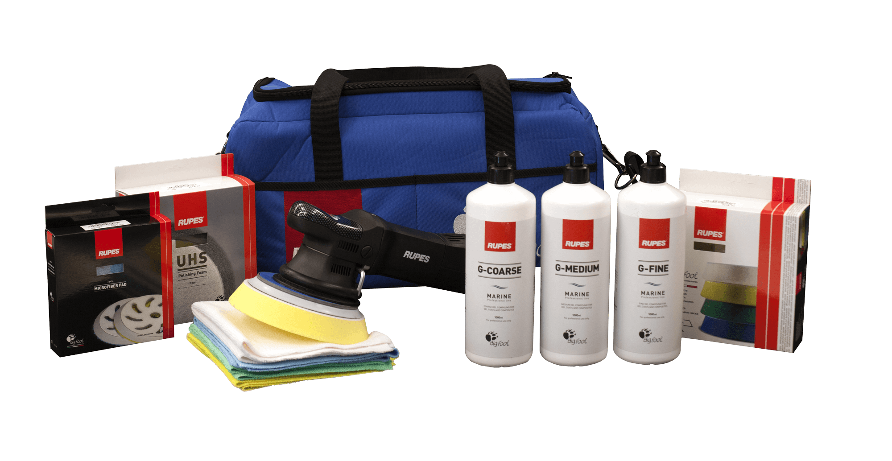

Владельцы яхт часто пытаются сэкономить: покупают полировальную машинку, воск, нанимают матроса и ждут, что их судно заблестит как на картинке. Но матрос — не детейлер. У него другие задачи и навыки — сделать детейлинг яхты он не сможет.
Полировка — это всего лишь часть процесса. Еще судно нужно часто и правильно мыть, очищать от въевшихся загрязнений и покрывать защитными составами. Это муторно и затратно, но зато ваша яхта всегда будет выглядеть так, словно только что сошла со стапелей, а ее цена на вторичном рынке всегда будет высокой.
При правильном подходе детейлинг яхты — это не лишние расходы, а выгодные инвестиции. Поэтому разберемся, как делать его правильно.
Строение корпуса малых судов
Современные катеры, яхты и гидроциклы сделаны из легких, но прочных композитных соединений — так называемого стекловолокна. Чтобы забортная вода не повредила пластиковый корпус судна, сверху его покрывают декоративно-защитным слоем — гелькоутом.
 Гелькоут защищает корпус от агрессивного воздействия солей и микроорганизмов, содержащихся в забортной воде
Гелькоут защищает корпус от агрессивного воздействия солей и микроорганизмов, содержащихся в забортной воде
Гелькоут состоит из полиэфирных смол, которые очень устойчивы к механическим нагрузкам и создают плотную поверхность, непроницаемую для воды и воздуха. Обычно толщина гелькоута доходит до 0,6–1 мм, а это в 10 раз больше слоя лака на кузове автомобиля.
Из-за твердости гелькоута с ним очень тяжело работать, но у профессиональных детейлеров есть необходимое оборудование, а главное — опыт. Еще они разбираются в особенностях разных типов материалов, которых в конструкции малых судов достаточно много: металл — в палубных надстройках и поручнях, винил — в обшивке салона, резина — на нескользящем покрытии палубу, и плексиглас (оргстекло) — в иллюминаторах, ветрозащитных стеклах и обтекателях. Все они требуют ухода и, главное, защиты от той агрессивной среды, в которой судну приходится постоянно находиться.
Две проблемы водного детейлинга
В морской воде таится больше опасностей, чем на зимних дорогах, усыпанных противоледной химией. Вода постоянно контактирует с корпусом судна, попадает на палубу и затекает в трюм. Но высохнув, она не исчезает без следа: после нее остаются солевые разводы, споры водорослей и других морских организмов, которые начинают размножаться и строить себе маленькие домики, проедая поверхность вашей яхты.
Соль — большая головная боль для тех яхтсменов, которые ходят по морям. Попав на любую поверхность, она начинает постепенно ее прожигать. Страдает всё — металл, резина, плексиглас и винил. Даже специальные защитные покрытия не в силах долго сопротивляться агрессивному воздействию морской соли, если ее вовремя не удалять.
Что делать, если соль уже повредила покрытие Соль разъела гелькоут на корпусе гидроцикла. Чтобы повреждение не пошло дальше в структуру корпуса, нужна восстановительная полировкаМикроорганизмы, живущие в воде, — другая серьезная проблема. Они есть как в море, так и в пресных реках и озерах. И если не следить за их активностью на корпусе вашего судна, очень скоро оно позеленеет и обрастет водорослями, ракушками и прочей живностью. Это не только сильно испортит внешний вид яхты, сделав его неухоженным, но еще заметно снизит ходовые характеристики судна.
Подготовка к сезону
Чтобы в течение всего судоходного сезона на корпус яхты не налипала грязь, а уход за ней был легким и приятным, перед спуском на воду нужно провести ее тщательный детейлинг.
Восстановление. После расчехления яхту нужно хорошенько вымыть — лучше всего способом двухфазной мойки. На чистом корпусе станут заметны все места с въевшимися загрязнениями. Чтобы их очистить, используйте отдельное средство для каждого типа поверхности: универсальные составы никогда не смогут обеспечить качественный результат.
Виды загрязнений и как с ними бороться Уход за кожаным салоном
Для гелькоута
Pearl & Metalliс Soft Wax — мягкий очищающий воск
Со временем светлый корпус яхты желтеет: грязь въедается в его структуру так глубоко, что простой мойкой достать ее оттуда уже не удается.
Мягкий воск проникает во все поры и микротрещины на гелькоуте, вымывая оттуда накопившуюся за прошлый сезон грязь. После этого яхта обычно светлеет на несколько тонов.
Для хрома
Chrome Cleaner — очиститель хрома
Убирает солевые разводы, ржавые подтеки и естественное помутнение на хромированных поручнях и других металлических деталях яхты, возвращая им заводской блеск.
Для кожи и винила
Beautiful G’zox Cleaner & Wax — деликатный очиститель кожи
Обычно в обшивке салона судна используется не натуральная кожа, а винил — так долговечнее. Но кожаная обивка бывает в каютах.
Чтобы кожа и винил не теряли цвет, не рассыхались под ярким солнцем и не растрескивались, их нужно периодически чистить и увлажнять.
- Левая половина корпуса очищена мягким воском
- После обработки мягким воском (справа)
Защита. Когда яхта очищена от старых загрязнений, ее нужно защитить, чтобы не появились новые. Обычно для этого используют воски, хотя существую более эффективные и долговечные средства — кварцевые составы. Несмотря на отличия, главный принцип их действия один — корпус судна покрывается защитным слоем, как прозрачным панцирем, который не дает грязи зацепиться за поверхность.
Краткий гид по защитным покрытиям
Кварцевый состав
H-7 Ultimate Real Glass Coat — надежный длительный эффект
Срок службы: от 1 года
Воск
Water Block Wax for White — водоотталкивающая защита
Срок службы: до 3 месяцев
 Катер покрыт защитным кварцевым составом. Загрязнения не могут закрепиться на корпусе – их легко убрать просто проведя по ним влажной микрофиброй
Катер покрыт защитным кварцевым составом. Загрязнения не могут закрепиться на корпусе – их легко убрать просто проведя по ним влажной микрофиброй
Текущий уход
Пока яхта стоит на воде, полноценно ухаживать за ней сложно. Поэтому большинство яхтсменов ограничиваются уборкой салона и палубы. К сожалению, часто этого недостаточно.
Мойка. Забортная вода воздействует на судно постоянно, поэтому также постоянно яхту нужно ополаскивать чистой пресной водой из шланга или аппарата высокого давления. Лучше всего делать это после каждой поездки — тогда солевых разводов и водорослей на поверхностях судна будет меньше. Если яхта долго стоит у причала, ее желательно мыть хотя бы раз в неделю.
Как правильно помыть автомобильС гидроциклами и небольшими катерами проще: если вы возите их на прицепе и каждый раз поднимаете на берег, можно заехать на автомойку или студию детейлинга для качественной двухфазной мойки с шампунем.
Water Block Shampoo White — водоотталкивающий эффект
Мягко очищает корпус яхты при помощи обильной плотной пены. После использования на поверхности остается прочная восковая пленка, которая ускоряет сход воды и предотвращает налипание грязи.
Smooth Egg Shampoo for Repair — восстанавливающий шампунь
Обладает легким водоотталкивающим эффектом, что ускоряет сход воды и упрощает сушку корпуса судна.
Нанесение воска. Главное правило тщательного ухода за яхтой или катером: наносите защитный воск как можно чаще — лучше всего один раз в 2-3 месяца. Свежий слой воска создает длительный водо- и грязеотталкивающий эффект: вода не скапливается на поверхностях судна, поэтому на них не остается соляных разводов, а рабочие зоны не засаливаются и не желтеют от активного использования. Если судно покрыто кварцевым защитным составом — этот шаг можно пропустить.
Обзор твердого воска Fusso Coat 12 Months
Fusso Coat 12 Months Protection — долговременная защита светлого корпуса
Срок службы: до 12 месяцев

Water Block Wax for White — водоотталкивающая защита корпуса судна
Срок службы: до 3 месяцев
Подготовка к зимнему хранению
Если климат не позволяет держать судно на воде круглый год, на зиму его поднимают на берег и «консервируют». Чтобы яхта хорошо пережила этот период, ее нужно качественно подготовить к зимовке.
Очистка. Если в начале сезона вы не покрыли яхту защитным кварцевым составом, вытащив судно из воды, возможно, сначала вам придется отскоблить от корпуса слой налипших водорослей и ракушек. Только после этого можно переходить к тщательной мойке всего судна с шампунем. Финальный этап очистки — применение мягкого воска для борьбы с глубоко въевшимися загрязнениями.
Полировка. Помогает убрать все виды потертостей, а также последствия солевых разводов и ожогов от яркого солнца, которые остаются на гелькоуте и других поверхностях судна после сезона активного судоходства. Все проблемные зоны станут хорошо заметны, когда вы тщательно помоете судно. Если оставить их без внимания, после зимы вас может ждать сюрприз: вздувшийся гелькоут или проеденные коррозией хромированные детали.
Как отличить хорошую полировку от плохой- Пример того, с чем справится только механическая полировка: хромированные перила не были вовремя покрыты защитным составом, что привело к коррозии
- Иллюминатор после восстановительной полировки
- Левая часть стекла из плексигласа после полировки
Специально для увлеченных яхтсменов, а также владельцев катеров и гидроциклов компания RUPES создала готовый набор для тщательного ухода за корпусом и другими поверхностями малых судов. В комплект входит целый арсенал продуктов и инструментов для механической полировки: легендарная полировальная машинка LHR21ES с орбитально-вращательной технологией, большой набор полировальных кругов и абразивных паст различной зернистости для гелькоута, смол и морских красок.
RUPES Marine Kit – портативный набор для детейлинга яхты или катераКонсервация. Перед отправкой на хранение яхту нужно вновь покрыть защитным составом, который всю зиму будет ограждать корпус судна от пыли и атмосферных осадков. В качестве дополнительной защиты рекомендуем накрыть палубу плотным тентом, чтобы ветер, дождь и снег не повредили салон и трюмы, пока судно стоит на берегу.
Три готовых решения
1. Кварцевая защита. Если у вас нет времени разбираться в тонкостях различных средств по уходу за яхтой, и вы ищете одно простое решение, используйте твердый кварцевый состав H-7 Ultimate Real Glass Coat. Он работает гораздо эффективнее, чем любые существующие на рынке воски, а по долговечности опережает их на порядок.
Обзор H-7 Ultimate Real Glass CoatЕго действия хватает на целый судоходный сезон. А подняв судно из воды для зимнего хранения, останется просто хорошенько его вымыть — полировку и повторное нанесение кварцевого состава можно перенести на следующий год.
2. Школа детейлинга. Подойдет для тех, кто всё же хочет разобраться во всех аспектах профессионального ухода за яхтой. А еще для тех, у кого большая яхта с собственной командой, тогда для нескольких матросов можно устроить повышение квалификации — в области водного детейлинга.
Чтобы узнать подробности учебной программы, звоните по телефону 063 049 49 49 или отправьте заявку и мы с вами свяжемся. Заявка на обучение3. Детейлинг от профессионалов. Многие автодетейлеры успешно работают с гидроциклами, катерами и яхтами. Специалисты CarDetailLab всегда готовы приехать в ваш яхт-клуб, порт или марину, чтобы провести детейлинг яхты прямо в месте ее стоянки. Если у вас небольшой катер или гидроцикл, который умещается на автоприцепе, ждем вас у нас в студии или у одного из наших партнеров.
Записаться на детейлинг Адреса и телефоны студий детейлинга

{kind=link}
{kind=link}
{kind=link}
{kind=link}
{kind=link}